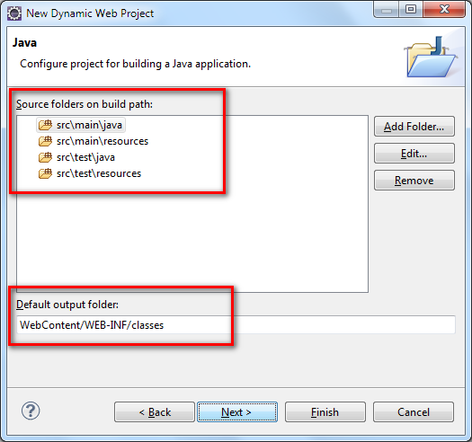

1 jetbrick 框架总揽
1.1 jetbrick 介绍
1.1.1 jetbrick 是什么？
jetbrick 是一个用 Java 开发的轻量级框架。追求快速上手和高效开发。用少量的代码来实现强大的功能。极大的提高用户的开发效率，节约宝贵的时间。
1.1.2 jetbrick 的组合部分
| 组件 | 说明 |
|---|---|
| jetbrick-commons | 常用 Utils 类库 |
| jetbrick-webmvc | 灵活的 MVC 框架 |
| jetbrick-template | 高性能的 Java 模板引擎 |
| jetbrick-ioc | 小巧的 IoC 容器 |
| jetbrick-orm | 一个 轻量级的 O/R Mapping 框架 |
| jetbrick-schema-app | 基于 Schema 的自动代码生成器 |
1.1.3 jetbrick-commons
jetbrick-commons 提供了常用的 utils 类库，类似于 apache-commons 类库。无第三方 jars 依赖，其中部分源代码来源于第三方开源类库。
- StringUtils, ArrayUtils, ...
- ClassDescriptor, MethodDescriptor, ...
- ClassLoaderUtils, ClassUtils, ...
- FileResource, ClasspathResource, ...
- FastByteArrayOutputStream, ...
- FileFinder, ClassFinder, ...
- ConfigLoader, Configuration, ...
- Logger, LoggerFactory, ...
- TypeCast
- ...
1.1.4 jetbrick-webmvc 的特点
类似于 Struts, Spring MVC 等经典 MVC 框架，jetbrick-webmvc 通过大量的经验总结，提供小巧、强大，更灵活的 webmvc。
- 小巧，轻量，易上手
- 支持 Restful
- IoC 注入，易管理，易测试
- Interceptor 机制，功能强大
- Plugin 机制，易扩展
- 完全自定义的 Annotation，灵活定制
- 内置文件上传，下载支持
- 内置 JSON 支持
- 内置多种 Result
- 内置多种 View
1.1.5 jetbrick-template 的特点
jetbrick-template 是一个新一代 Java 模板引擎，具有高性能和高扩展性。 适合于动态 HTML 页面输出或者代码生成，可替代 JSP 页面或者 Velocity 等模板。 指令和 Velocity 相似，表达式和 Java 保持一致，易学易用。
- 支持类似于 Velocity 的多种指令
- 支持静态编译
- 支持编译缓存
- 支持热加载
- 支持类型推导
- 支持泛型
- 支持可变参数方法调用
- 支持方法重载
- 支持类似于 Groovy 的方法扩展
- 支持函数扩展
- 支持自定义标签 #tag
- 支持宏定义 #macro
- 支持布局 Layout
1.1.6 jetbrick-ioc 的特点
简单，小巧的 IoC 容器，Bean 自动发现，自动注册。
- 小巧，轻量，易上手
- Properties 配置文件配置 Bean
- Annotation 自动扫描获取 Bean
- 支持字段注入
- 支持构造函数注入
- 支持 Bean 工厂模式
- 支持 Bean 初始化方法
- 支持自定义的 Annotation 注入
1.1.7 jetbrick-orm 的特点
JDBC 的轻量级封装，面向对象的 API 接口。简单，高效。
- 无反射，高性能
- API 接口易使用
- 支持 one-to-one, one-to-many
- 支持 CRUD Cache
- 支持编程事务+声明事务
- 支持嵌入式事务
- 支持数据库方言 Dialect
- 支持 JSR303 Validator
- 支持运行期自动升降级数据库
- 配合 jetbrick-schema-app 自动生成 pojo, dao
1.1.8 jetbrick-schema-app 的特点
借助于 XML Schema 文件，自动为 jetbrick-orm 生成相应的 POJO, DAO 等相关代码。
- 自动生成 jetbrick-orm 用的 pojo, dao
- 独立的数据类型（和数据库产品无关）
- 支持多种数据库
- 支持 one-to-one, one-to-many
- 支持不同类型的主键（String, int, Long)
1.2 快速入门 Quick Start
jetbrick 推荐使用 Eclipse IDE for Java EE Developers 做为开发环境。最新版下载地址：http://www.eclipse.org/downloads/
下面，我们以一个用户登录的例子来简单的学习一下如何使用 jetbrick 来进行快速开发。
1.2.1 创建 Dynamic Web Project
请用你的 Eclipse IDE 根据下面的向导，快速新建一个动态 Web 项目。
1.2.1.1 新建 Web 工程

1.2.1.2 填写项目信息

推荐使用 Servlet API 3.0 以上的标准。
1.2.1.3 设置 Build Path

推荐使用例子中的 source 文件结构 (Maven 标准) ，以及使用对应的 Output folder 路径。
1.2.1.4 设置 Web Module

1.2.1.5 新建项目信息汇总
根据上面新建的 Web 项目，将会具有如下的目录结构：
- /src/main/java/
- /src/main/resources/
- /src/test/java/
- /src/test/resources/
- /WebContent/WEB-INF/web.xml
- /WebContent/WEB-INF/lib/
- /WebContent/WEB-INF/classes/
我们假设你的 Java 项目的包都在 jetbrick.docs.samples 下面，然后部署在 http://127.0.0.1:8080/jetbrick_docs_samples/ 下面。
1.2.2 增加 jetbrick 依赖包
普通用户
将如下的 jars 复制到工程的 /WebContent/WEB-INF/lib/ 目录下面，然后加入到 Build Path 中去。
- jetbrick-all-1.0.0.jar
- slf4j-api-1.7.7.jar
- slf4j-simple-1.7.7.jar (可选包)
- fastjson-1.1.38.jar (可选包)
以上 jars 你可以在 jetbrick-all-xxx.zip 中找到。
对于 jetbrick 来说，我们只依赖于 slf4j-api，没有其他的第三方依赖。
Maven 用户
使用如下 Maven 坐标信息
1.2.3 配置 web.xml
1.2.4 配置 /WEB-INF/jetbrick-webmvc.properties
1.2.5 创建一个 Controller
1.2.6 创建一个 PassportService
PassportService 用来提供用户名密码认证服务。范例代码中，使用了固定的用户名和密码，实际代码应该是从数据库中进行验证。
1.2.7 创建登录页面 /WebContent/passport/login.jsp
1.2.8 放在 Tomcat 里面运行
好了，尝试将你的 Web 项目部署到 Tomcat 中去吧，然后运行。
1.2.8.1 打开 Servers View

1.2.8.2 新建一个 Tomcat Server

1.2.8.3 选择本地 Tomcat 服务器安装路径

1.2.8.4 选择要部署的 Web 项目

1.2.8.5 启动 Tomcat

1.2.8.6 打开你的浏览器
输入：http://127.0.0.1:8080/jetbrick_docs_samples/passport/login
1.2.9 完整 demo 下载
你可以在 http://subchen.github.io/jetbrick/download.html 中下载最新的 demo 实例代码。
2 IoC 手册
2.1 什么是 IoC
控制反转（Inversion of Control，英文缩写为 IoC）是一个重要的面向对象编程的法则来减少代码之间的耦合度。其中最常見的方式叫做“依赖注入”（Dependency Injection，简称 DI），还有一种方式叫“依赖查找”（Dependency Lookup）。
通俗的讲就是如果在什么地方需要一个依赖的对象，你自己不用去通过 new 生成你需要的对象，而是让 IoC 容器来为你创建该对象，并注入到你的对象中。
维基百科参考：控制反转（Inversion of Control，缩写为IoC）
2.2 一个简单的例子 Hello World
2.2.1 编程方式
显式的将对象加入到 IoC 容器中，并通过 @Inject 进行对象注入。
2.2.2 通过 annotation 自动发现
通过 @IocBean 注解来自动将对象加入到 IoC 容器中，并通过 @Inject 进行对象注入。
2.2.3 .properties 配置方式
在配置文件中配置，所有 $ 开头的对象，将自动加入到 IoC 容器中。
ioc.properties
Java 代码
2.2.4 自定义配置文件？
既然我们可以支持 .properties 配置文件，那么我们也可以支持 XML，JSON 等格式的配置文件。
其实我们只要实现一个 jetbrick.ioc.loaders.IocLoader 接口的自定义加载器就可以了。
具体怎么实现，可以参考：jetbrick.ioc.loaders.IocAnnotationLoader 或者 jetbrick.ioc.loaders.IocPropertiesLoader。
同时，如果大家实现自己的 IocLoader，欢迎 share 相应的实现。
2.3 @IocBean
此章节中，我们会详细讲解一下如何通过 Java Annotation 来配置你的 IoC 容器对象。
通常，在 IoC 容器启动的时候，会在用户配置的 classpath 路径下面扫描所有的 Class，然后将所有声明了 @IocBean 这个 Annotation 的 Class，自动加入到 IoC 容器中进行管理。
2.3.1 指定对象的名称
任何一个 Ioc 容器管理的对象，都必须有一个名字，以便通过 ioc.getBean(name) 来获取对象。因此，你可以这样定义你的对象:
我们看到，我们的 Foo 的名字叫 foo，然后我们可以通过下面的代码来获取该对象：
2.3.2 缺省的对象名称
如果你的注解 @IocBean 省略了名字，那么默认名字为定义类的完整的类名，如下：
这里，我们没有手动指定对象在 IoC 容器中的名称，这个时候将会采用默认的名称（类名的全称）。
然后我们可以通过下面 2 种方式来获取该对象：
根据类名的全称
直接根据类名
Tips: 我们推荐对象都优先使用这种缺省名称，不容易产生命名冲突，并且代码更优雅。
2.3.3 工厂类 IocFactory
像 Spring 的 BeanFactory 一样，我们的 IoC 也支持工厂类。看范例代码：
通过代码我们可以看到，我的工厂类实现了 IocFactory 接口。
这样，我们通过 ioc.getBean("product") 获得对象将是 Product，而不是 ProductFactory。
2.3.4 单例？
默认情况下，所有 @IocBean 的对象都被认为是单例对象，在 IoC 容器中只会存在一份实例。
如果要将对象设置为非单例模式，那么只需要配置 @IocBean(singleton=false) 既可。
2.4 @Inject
上一章节我们介绍了 @IocBean 可以将 Java 对象自动加入到 IoC 容器中进行管理。这一章我们将介绍 @Inject 注解，来实现对象的注入。
2.4.1 简单的例子
看清楚了吗？我们通过 @Inject 注解，我们已经将 User 对象成功的注入到了 Hello 对象中。
2.4.2 @Inject 可配置的属性
value
要注入对象的名称 name，缺省情况下，将根据对应类型的完整类名作为 name。
```java
@Inject
java.sql.DataSource dataSource@Inject("mysql")
java.sql.DataSource mysqlDataSource
```第一个 dataSource 将获取
ioc.getBean("java.sql.DataSource")这样的对象。required
表示如果注入的对象不存在，是否要抛出 NullPointerExpcetion。
默认情况下，
required=true
2.4.3 字段注入
就像我们上面看到的例子一样，我们用 @Inject 注入的是字段。
只要不是被声明成 final 的字段，IoC 都可以实现注入。不管是 public 的还是 private 的，亦或者是 static 的字段都没问题。
2.4.4 构造函数注入
除了最常见的字段注入之外，我们还提供了构造函数注入方式。
2.4.4.1 指定构造函数
通过将 @Inject 声明在构造函数上面，我们就可以使用指定的构造函数来初始化对象。
2.4.4.2 默认构造函数
如果没有 @Inject 声明的构造函数，那么必须存在一个空的构造函数，并且是 public 的。
2.4.4.3 构造函数参数注入
默认情况下，每个参数都缺省使用了 @Inject，如果我们需要自定义，那么我们可以给每个参数手动指定 @Inject。如下：
2.5 IoC 对象生命周期
在对象注入完成之后，我们提供了一些方法来监控对象的生命周期。
2.5.1 注入完成之后调用的方法 @IocInit
Tips：
@IocInit标注的方法必须是没有任何参数，并且返回值是void，非static的方法。
2.5.2 被 IoC 容器删除时调用的方法 @IocFree
注意：如果你的对象是 singleton=false，那么 IoC 容器创建了对象实例的时候，并不会记录该对象实例。所以在对象被 IoC 容器移除的时候，并不会触发该方法调用。
Sorry！该功能当前版本暂未实现！
2.6 @Config
在前面的章节中，我们使用 @Inject 注入 IoC 容器中管理的对象。在这个章节中，我们将介绍另外一种配置文件属性的注入方式。
假设我们有这样一个配置文件：
app.properties
AppConfig.java
然后这样下面的代码将自动将 app.properties 中的属性注入到 AppConfig 类中。
心动了吗？我们的 AppConfig 竟然还能直接注入 app.properties 配置文件中配置的属性。
并且注入的时候，还会自动进行类型转换，以匹配目标类型。
和 @Inject 类似，@Config 可以被用在字段注入和参数注入。
再来一个构造函数参数注入的例子:
怎么样？有了 @Config，我们的注入更方便了。
2.7 @SpringBean
IoC 容器支持 Spring IoC 容器作为外部容器，允许将 Spring IoC 容器中管理的 Bean 注入到对象中。
看一个简单的例子：
spring.xml
Java 代码
如果你的 Spring 在 web.xml 中进行了初始化（可以通过 WebApplicationContextUtils.getWebApplicationContext(ServletContext) 获取），那么 JdbcUtils.dataSource 将会成功的被注入。
如果你的 Spring 没有在 web.xml 中进行初始化，那么需要将 Spring 的 ApplicationContext 对象手动加入到 IoC 容器中。如下：
2.8 自定义注入 Annotation，牛！
学习了前面的 @Inject, @Config 和 @SpringBean 注入 Annotation，这回 jetbrick 带来了更加强大的自定义 Annotation 注入功能。
啥意思？ 看看下面的代码就明白了。
2.8.1 看代码学习
@InjectMe 是什么？没见过啊？也能实现注入？ YES！
其实这个 @InjectMe 是由用户自定义的，如下的代码：
在这里，@InjectMe 只是一个普通的 Annotation。唯一不同的是，这个 Annotation 本身存在一个 @InjectFieldWith(...) 的 Annotation。
正是这个 @InjectFieldWith(InjectMeInjector.class) 用来表示 @InjectMe 将可以被用来注入字段（需要配合 @Target({ElementType.FIELD}) 来使用）。
那么如何来注入呢？就是由 @InjectFieldWith(...) Annotation 的参数类来实现的，在本例子中就是 InjectMeInjector 这个 Class 来实现的。
其中 InjectMeInjector 实现如下：（字段注入需要实现 FieldInjector 接口）
怎么样，学会了吗？
介绍完了自定义注入字段 Annotation，采用类似的方法，我们还可以定义注入参数 Annotation。
2.8.2 自定义字段注入
2.8.3 自定义参数注入 (构造函数参数)
Tips：我们也可以让一个注解既支持字段注入，也支持参数注入。怎么做？我们可以参考 @Config 或者 @SpringBean Annotation 的代码实现。
2.9 IoC Annotation 一览表
这里提供一个完整的 IoC 使用的 Annotation 列表，以供参考。
| 注解 | 说明 |
|---|---|
| @IocBean | AnnotationIocLoader 将根据这个注解自动将该对象加入到 IoC 容器中管理 |
| @Inject | 注入 IoC 中管理的对象（字段和参数，构造函数） |
| @Config | 注入配置文件中配置的参数（字段和参数） |
| @SpringBean | 注入 Spring IoC 中的对象（字段和参数） |
| @IocInit | 注入完成后的初始化方法 |
| @IocFree | 被 IoC 容器删除时调用的方法 |
| @InjectFieldWith | 实现自定义的字段注入的注解 |
| @InjectParameterWith | 实现自定义的参数注入的注解 |
3 webmvc 手册
3.1 什么是 MVC
MVC 是一种使用 Model-View-Controller (模型-视图-控制器) 设计创建 Web 应用程序的模式：
* Model（模型） - 是应用程序中用于处理应用程序数据逻辑的部分。通常模型对象负责在数据库中存取数据。
* View（视图） - 是应用程序中处理数据显示的部分。通常视图是依据模型数据创建的。
* Controller（控制器） - 是应用程序中处理用户交互的部分。通常控制器负责从视图读取数据，控制用户输入，并向模型发送数据。
MVC 分层有助于管理复杂的应用程序，因为您可以在一个时间内专门关注一个方面。例如，您可以在不依赖业务逻辑的情况下专注于视图设计。同时也让应用程序的测试更加容易。
MVC 分层同时也简化了分组开发。不同的开发人员可同时开发视图、控制器逻辑和业务逻辑。
维基百科参考：MVC 模式（Model-View-Controller）
3.2 一个简单的例子 Hello World
3.2.1 配置 web.xml
3.2.2 配置 /WEB-INF/jetbrick-webmvc.properties
3.2.3 创建一个 Controller
3.2.4 创建登录页面 /WebContent/hello.jsp
3.2.5 放在 Tomcat 里面运行
好了，将你的项目部署到 Tomcat 中去，然后运行吧。
打开你的浏览器，输入：http://127.0.0.1:8080/demo/hello

3.3 配置 web.xml
3.3.1 一个典型的 Restful 配置 "/*"
- 将 URL 映射成
/*，将会对所有的资源进行拦截，静态资源的过滤请看：资源过滤器 BypassRequestUrls - 设置配置文件路径为
/WEB-INF/jetbrick-webmvc.properties（默认值）
3.3.2 传统的后缀名映射 "*.do"
- 将 URL 映射成
*.do - 设置配置文件路径为
/WEB-INF/jetbrick-webmvc.properties（默认值）
3.4 资源过滤器 BypassRequestUrls
3.4.1 什么是资源过滤器
在 web.xml 中，我们通常将 URL 映射成 /*，也就是将所有请求的 URL 都交给 DispatcherFilter 来进行处理。
这其中包括了 js, css, jpg 等静态资源，也包括像 jsp 这样的等动态页面。而像这样的 URL 通常是由默认的 Servlet 来处理的，我们的 DispatcherFilter 是无法直接处理这样的 URL 资源的。如此就会造成这些 URL 将无法得到正确的处理。
所以，这里我们需要对这些静态/动态资源进行 URL 过滤，让这些 URL 交给其他的 Servlet 来处理。
3.4.2 URL 过滤匹配算法
jetbrick 提供了 2 种资源过滤器，使用的不同的匹配算法。用户也可以实现自己的资源过滤器。
- 前缀/后缀匹配: PrefixSuffixBypassRequestUrls（默认）
- 正则表达式匹配: RegexBypassRequestUrls
3.4.2.1 前缀/后缀匹配: PrefixSuffixBypassRequestUrls（默认）
匹配方式和常见的通配符匹配类似，但是只能使用 *, 并且 * 只能放在最前面或者最后面。
3.4.2.2 正则表达式匹配: RegexBypassRequestUrls
3.4.3 自定义资源过滤器
如果用户想要自定义自己的过滤器，只要实现 jetbrick.web.mvc.BypassRequestUrls 接口即可。
3.5 Controller 和 Action
Controller 是一个普通的 Java POJO 类。
每个 Controller 类包含一个或者多个 Action 方法。每一个 Action 方法对应一个 Action URL。
jetbrick 使用 @Controller 来标注 Controller 类，使用 @Action 来标注一个 Action 方法。
3.5.1 一个最简单的 Controller 类
这个 Action 方法将会被映射到 /hello/world 这样的 URL 上面。
3.5.2 Action URL 映射
一个 Action URL 由 controller_path 和 action_path 组合而成。 规则如下：
3.5.2.1 范例 1
其中：
* controller_path = /users
* action_path = /list
那么组合在一起的 Action URL 就是 /users/list
3.5.2.2 范例 2 （默认 path）
缺省默认 path 的规则如下：
- controller_path - 默认为空。
- action_path - 默认为方法名。
根据默认规则，这样我们的 Action URL 就是 /list
3.5.2.3 URL 映射表格
下面的表格有助于对如何生成对于的 Action URL 有更直观的了解。
| controller_path | action_path | URL |
|---|---|---|
默认(空 or /) |
默认 | /<method> |
默认(空 or /) |
/ | / |
默认(空 or /) |
/foo | /foo |
默认(空 or /) |
foo | /foo |
| /boo | 默认 | /boo/<method> |
| /boo | / | /boo/ |
| /boo | /foo | /boo/foo |
| /boo | foo | /boo/foo |
3.5.3 Controller 单例？
默认，我们的 Controller 是单例的，如果你的 Controller 是有状态的，那么你可以将 Controller 设为非单例的。如下：
Tips：
* 单例的 Controller 有助于提高响应速度，IoC 注入只发生一次。
* 单例的 Controller 是线程不安全的，所以应该是无状态的，或者是无关 Request/Session 的。
3.5.4 HTTP request methods
默认的 Action 将会匹配 GET 和 POST 方法，用户可以使用 @Action 进行重载。
这个 Action 方法将会匹配一个 POST 请求， URL为 /save。如果是 GET 或者其他的请求，那么将会得到一个 404 (Page not found).
我们也支持一个 Action 对应多个 Http Method，可以如下配置：
3.6 Controller/Action 注入
jetbrick 支持 IoC，所以，我们的 Controller 自然也可以注入依赖的 Bean 对象。
3.6.1 Controller 字段注入
我们可以使用如下的 Annotation 来实现字段注入：
@Inject- IoC 容器对象@Config- 配置文件配置项@SpringBean- Spring IoC 对象@XXX- 用户自定义标注
基本上，Controller 字段注入的大部分都是全局对象。不支持直接注入 Request/Session 上下文相关的对象。
3.6.2 Action 参数注入
在 Action 中，我们不仅可以注入 IoC 容器中的对象，我们也可以注入 Request/Session 上下文相关的对象。
对于 Action 参数的注入，我们支持 2 种方式：
1. 根据 Annotation 注入：
@Inject- IoC 容器中的对象@Config- 配置文件中的配置项@SpringBean- Spring IoC 对象@PathVariable- Path URL 参数@RequestParam- Request.getParameter(...)，也支持文件上传对象 FilePart@RequestForm- 将多个 Request 参数，注入到一个 Form 对象中@RequestHeader- Request.getHeader(...)@RequestCookie- Request.getCookies()@RequestAttribute- Request.getAttribute(...)@SessionAttribute- Session.getAttribute(...)@ServletContextAttribute- ServletContext.getAttribute(...)@InitParameter- ServletContext.getInitParameter(...)@XXX- 用户自定义标注
2. 根据参数的类型注入：
RequestContext- Request 上下文对象Model- Action 要返回的 Model 对象HttpServletRequest- Request 对象HttpServletResponse- Response 对象HttpSession- Session 对象ServletContext- ServletContext 对象FilePart- 单个上传文件对象FilePart[]- 所有上传文件对象RequestParameterMap- a map of request parameter.RequestParameterValuesMap- a map of request parameter values.RequestHeaderMap- a map of request header.RequestHeaderValuesMap- a map of request header values.RequestCookieMap- a map of request cookie.RequestAttributeMap- a map of request attributes.SessionAttributeMap- a map of session attributes.ServetContextAttributeMap- a map of servlet context attributes.ServetContextInitParameterMap- a map of servlet context init parameters.@XXX- 用户自定义类型
下面我们将对每一个 Annotation 和参数类型来说明。
3.6.2.1 根据 Annotation 注入
3.6.2.1.1 @Inject/@Config/@SpringBean
这几个 Annotation 是 IoC 容器本身提供的，具体说明可以参考 IoC 中的相关内容。
3.6.2.1.2 @PathVariable
专门用于获取 Request URL 中 {} 参数变量。支持变量类型的自动转换。
例如，我们的 Action URL 定义如下 /users/{id}，而我们的 Request URL 如下 /users/123。
这样你就可以用 @PathVariable("id") 来获取 URL 中参数 {id} 对应的变量 123.
Tips:
JDK 8 开始支持方法参数名称，所以我们如果省略
@PathVariable参数名称，那么我们将会从参数的名称中获取名字。对于使用 JDK 8 之前的版本，只要 Javac 编译的时候使用了-g编译选项（debug 编译），那么我们也可以在字节码源文件中自动获取参数名称。Sorry！当前版本暂未实现。
是不是这样的代码更优雅！记住其他的类似的 Annotation 都可以这么干哦！
3.6.2.1.3 @RequestParam
用于从 Request 中获取参数，等价于 request.getParameter(...)，支持自动类型转换。
我们既可以注入普通的 Parameter，也可以注入 FilePart 对象（文件上传对象）
3.6.2.1.4 @RequestForm
将多个 Request 参数，注入到一个 Form 对象中
3.6.2.1.5 @RequestHeader
等价于 Request.getHeader(...)，支持自动类型转换。
3.6.2.1.6 @RequestCookie
获取 Cookie 信息，支持自动类型转换。
3.6.2.1.7 @RequestAttribute
等价于 Request.getAttribute(...)
3.6.2.1.8 @SessionAttribute
等价于 Session.getAttribute(...)
3.6.2.1.9 @ServletContextAttribute
等价于 ServletContext.getAttribute(...)
3.6.2.1.10 @InitParameter
等价于 ServletContext.getInitParameter(...)，支持自动类型转换。
3.6.2.2 根据参数的类型注入
3.6.2.2.1 RequestContext
Request 上下文对象
3.6.2.2.2 Model
Action 要返回的 Model 对象
3.6.2.2.3 HttpServletRequest
Request 对象
3.6.2.2.4 HttpServletResponse
Response 对象
3.6.2.2.5 HttpSession
Session 对象
3.6.2.2.6 ServletContext
ServletContext 对象
3.6.2.2.7 FilePart
单个上传文件对象
3.6.2.2.8 FilePart[]
所有上传文件对象
3.6.2.2.9 RequestParameterMap
a map of request parameter.
3.6.2.2.10 RequestParameterValuesMap
a map of request parameter values.
3.6.2.2.11 RequestHeaderMap
a map of request header.
3.6.2.2.12 RequestHeaderValuesMap
a map of request header values.
3.6.2.2.13 RequestCookieMap
a map of request cookie.
3.6.2.2.14 RequestAttributeMap
a map of request attributes.
3.6.2.2.15 SessionAttributeMap
a map of session attributes.
3.6.2.2.16 ServetContextAttributeMap
a map of servlet context attributes.
3.6.2.2.17 ServetContextInitParameterMap
a map of servlet context init parameters.
3.6.2.3 进阶（自定义 Annotation 或者类型）
jetbrick webmvc 已经内置了大量的参数注入方式，怎么用都可以，并且我们也提供了扩展机制。
如果用户想自定义注入的对象或者 Annotation，请看下面的章节：自定义注入 Annotation
3.7 Result/ResultHandler
Result 是 action 方法的返回值。 action 方法返回值可以是任意类型，每一种 Result 类型将会有一个对应的 ResultHandler 来负责处理相应的 Result 对象。
3.7.1 内置的 Result/ResultHandler
jetbrick 已经内置了多种 Result/ResultHandler 处理器：
String: 负责处理模板 ViewHttpStatus: 响应一个 HTTP StatusRawData: 自定义输出RawDownload: 文件下载JSONAware: JSON 输出 (fastjson 库)JsonElement: JSON 输出 (Gson 库)org.w3c.dom.Element: XML 输出void: 无 Response 输出。
我们将分别介绍不同的 Result 的使用方法。
3.7.1.1 String
String Result 是专门用来处理模板 View 的，同时也能处理 forward 和 redirect 的情况。
当我们使用 String 作为 Result 的时候，我们实际是由 View/ViewHandler 这一对兄弟来处理对应的 View。具体可以参考 View/ViewHandler
3.7.2 HttpStatus
生成一个 HTTP Response 响应。
3.7.3 RawData
提供自定义输出
3.7.4 RawDownload
提供文件下载功能
3.7.5 JSONAware
使用 fastjson 库来生成一个 json 输出。
3.7.5.1 JsonElement
使用 gson 库来生成一个 json 输出。
3.7.6 org.w3c.dom.Element
输出一个 XML Document
3.7.7 void
不进行任何输出操作（可能用户自己会进行一些自定义的输出）
3.7.8 自定义 Result/ResultHandler
jetbrick 允许用户定义自己的 Result 和 ResultHandler。
3.7.8.1 自定义 Result
新建一个普通的 Java 对象: MyResult
Tips: 需要使用
@ManagedWith(...)标注，参数是对应的 ResultHandler 类。
3.7.8.2 自定义 ResultHandler
新建一个 MyResultHandler 类来处理 MyResult
Tips:
1. 需要实现jetbrick.web.mvc.results.ResultHandler接口
2. 需要使用@Managed(...)标注，参数是 Result 类。如果省略参数，那么将自动从 ResultHandler 接口的泛型参数中获取。
3.7.8.3 使用系统/第三方自带的 Result 类
如果你的 Result 类是系统自带的，或者第三方提供的，无法增加 @ManagedWith(...) 注解，那么也没关系。
我们可以直接定义对应的 ResultHandler。然后将自定义的 ResultHandler 所在的 package 加入的 jetbrick 自动扫描路径下（由 web.scan.packages 配置），然后 jetbrick 就会在启动的时候，自动发现所有的 ResultHandler，并且将其和 Result 关联起来。
我们真心的希望大家扩展自己的 Result/ResultHandler，然后共享出来，让 jetbrick 可以为更多的用户服务。
3.8 View/ViewHandler
当我们使用 String 作为 Result 的时候，我们实际是由 View/ViewHandler 这一对兄弟来处理对应的 View。
Result 返回值可以由下面两部分组成：
- view_type - 可选的 View 类型，代表用那个 ViewHandler 来处理
- view_path_name - 逻辑视图名称（包含路径，默认是相对于 Action URL 的路径）
比如下面的几种 Result 返回值例子：
- redirect:/passport/login
- login.jsp
- jetx:login.jetx
Tips:
* 如果 view_type 省略，那么将从 view_path_name 中的使用的扩展名中获取。
* 如果 view_path_name 扩展名也没有，那么将使用系统默认的 ViewHandler (由web.view.default配置)。
3.8.1 内置的 View/ViewHandler
jetbrick 已经内置了多种 View/ViewHandler 处理器：
forward: Forward 到一个指定的 pageredirect: Redirect 到一个指定的 page/URLjsp: 使用 JSP 作为 Viewjetx: 使用 jetbrick-template 作为 Viewvm: 使用 Velocity 作为 View
我们将分别介绍不同的 View 的使用方法。
3.8.1.1 forward
等价于 request.getRequestDispatcher(viewPathName).forward(request, response)
3.8.2 redirect
等价于 response.sendRedirect(viewPathName);
Tips:
* 返回的路径可以是http://,https://等开头的绝对路径。
* 返回的路径也可以是相对于 request URL 的相对路径。
* 返回的路径如果是/开头的绝对路径，那么 jetbrick 自动在前面会加上request.getContextPath()。
3.8.3 jsp
默认使用 JSP 页面作为 View
3.8.4 jetx
默认使用 jetbrick-template 页面作为 View
3.8.5 vm
默认使用 Velocity 页面作为 View
3.8.6 自定义 ViewHandler
jetbrick 允许用户定义自己的 ViewHandler。
比如说，我们要使用 Freemarker 来作为我们的模板引擎，那么就要如下定义：
Tips:
1. 需要实现jetbrick.web.mvc.results.views.ViewHandler接口，我们推荐直接继承jetbrick.web.mvc.results.views.AbstractTemplateViewHandler抽象类
2. 需要使用@Managed标注
3. 需要将自定义的 ViewHandler 所在的 package 加入的 jetbrick 自动扫描路径下（由web.scan.packages配置）
如果大家实现了第三方的 ViewHandler，我们希望能共享出来，让 jetbrick 可以为更多的用户服务。
3.9 全局异常处理器 Exception Handler
jetbrick 提供了一个全局的 Exception Handler 来处理所有的 Action/Result/View/Interpector 相关的错误。
要实现全局的异常处理器，主要实现 ExceptionHandler 接口即可。
3.9.1 新建一个 GlobalExceptionHandler.java 文件：
3.9.2 配置 jetbrick-webmvc.properties
3.9.3 新建 /error/500.jsp 等页面
3.9.4 经验
我们可以通过全局的异常处理器来处理一些服务端的未知异常，并保持现场出错信息到日志文件中，以方便分析，同时对于线上系统能及时的发送错误信息邮件给相关的管理员。
我们也可以在这里处理一些用户鉴权相关的异常，以及时通知用户未授权错误。
3.10 自定义拦截器 Interceptor
3.10.1 概述
Interceptor 是 jetbrick webmvc 用来实现对 Action 的预处理和后处理功能（AOP）。
jetbrick 采用了类似于 HTTP Filter 的责任链模式实现 Interceptor chain。
所有 Interceptor 都是单例的，非线程安全的。
3.10.2 Interceptor 例子
用户自定义的 Interceptor 需要实现 jetbrick.web.mvc.intercept.Interceptor 接口。
正如上面的代码所示，Interceptor 可以很方便地在 action 调用前后插入切面代码来实现 AOP。
其中 chain.invoke() 方法将调用下一个 Interceptor 或者 Action 方法。
Tips: Interceptor 只能拦截 Action，不能拦截 View。
3.10.3 Interceptor 配置
jetbrick 总共下面支持 3 种级别的 Interceptor
- Global 级别 - 对所有的 Action 进行拦截
- Controller 级别 - 对 Controller 中定义的 Action 进行拦截 (当前版本暂未实现)
- Action 级别 - 对单个 Action 方法进行拦截 (当前版本暂未实现)
3.10.3.1 Global 级别
在全局配置文件中 jetbrick-webmvc.properties 进行配置。
3.10.3.2 Controller 级别 (当前版本暂未实现)
在 Controller 类上面添加 @InterceptedBy 标注
3.10.3.3 Action 级别 (当前版本暂未实现)
在 Action 方法上面添加 @InterceptedBy 标注
Tips:
拦截器调用的顺序如下：
1. Action 级别
2. Controller 级别
3. Global 级别
同级的 Interceptor 和定义的顺序保持一致。
3.11 自定义插件 Plugin
3.11.1 概述
Plugin 是 jetbrick webmvc 用来进行扩展自身功能的。Plugin 会随着 jetbrick webmvc 的启动而启动。
3.11.2 Plugin 例子
用户自定义的 Plugin 需要实现 jetbrick.web.mvc.plugin.Plugin 接口。
3.11.3 Plugin 配置
3.12 自定义 Action 参数注入 Annotation
在 Action 参数注入章节中，我们看到 @Inject, @Config 等用于 Controller 注入的 Annotation，还看到了 @PathVariable, @RequestParam 等专门用于 Action 方法的参数注入的 Request/Session 相关的 Annotation。
同样的，我们在 IoC 相关的章节中也介绍了IoC 自定义注入 Annotation。但是在 IoC 容器中，只能使用 Request/Session 无关的自定义 Annotation。而本章节将介绍的是专门用于 Action 方法的参数注入的 Request 相关的自定义 Annotation。
3.12.1 看代码学习
先创建自己的 Annotation。
注意，我们在这个 Annotation 上面标注了一个 @ManagedWith(RequestHeaderArgumentGetter.class)，这个是关键点。告诉 jetbrick，这个 Annotation 将会由 RequestHeaderArgumentGetter 来处理。
下面我们在创建 RequestHeaderArgumentGetter.java
作为一个准备注入 Action 参数的自定义的 Annotation，我们的 Class 必须实现 jetbrick.web.mvc.action.annotations.AnnotatedArgumentGetter<A, T> 接口。
其中，泛型参数 A 代表你要处理的自定义 Annotation，T 代表返回值类型。
3.12.2 自定义注入类型
其中 @ManagedWith(SessionUserArgumentGetter.class) 描述了 SessionUser 对象的注入将会由 SessionUserArgumentGetter 来实现。
我们再来看 SessionUserArgumentGetter 参数注入处理器：
其中，按类型注入必须实现 jetbrick.web.mvc.action.annotations.TypedArgumentGetter<T> 接口。
再来看一下如何使用这个 SessionUser。
如果我们要注入的类型是系统 Class 或者第三方提供的，无法为其添加 @ManagedWith(XXXArgumentGetter.class) Annotation，那么也没关系。只要有 XXXArgumentGetter.class 就可以了，比如我们想要注入 java.util.Locale，我们只要实现一个对应的 LocaleArgumentGetter 即可。如下：
其中 @Managed(Locale.class) 会将 Locale 对象和 LocaleArgumentGetter 绑定起来。如果省略 @Managed 的参数，那么 jetbrick 会自动从 TypedArgumentGetter<Locale> 定义中获取泛型参数。
3.13 文件上传支持 FileUpload
jetbrick-webmvc 使用 commons-fileupload 来处理文件上传。
jetbrick-webmvc 会自动判断 Request 请求时候是否是文件上传(multipart/form-data)，然后会将上传文件内容解析出来，将文件内容储存在临时文件中（由 web.upload.dir 配置），并封装成 FilePart 对象给用户使用。
3.13.1 看代码学习
3.13.2 API 接口
我们可以通过 RequestContext 对象获取上传的文件：
- List<FilePart> getFileParts() - 获取所有的文件对象
- FilePart getFilePart(String name) - 按照名称获取文件对象
- FilePart getFilePart() - 获取第一个文件对象
同样的，我们可以通过 Action 参数注入获取 FilePart 对象。
- FilePart[] files - 获取所有的文件对象(按类型注入)
- FilePart file - 获取第一个文件对象(按类型注入)
- @RequestParam("name") FilePart file - 按照名称获取文件对象
3.13.3 文件上传和其他参数混合
jetbrick-webmvc 已经在内部处理的该情况，其他参数我们依旧可以通过 request.getParameter(...) 来访问。
我们的 jsp 页面如下：
3.14 jetbrick-webmvc.properties
在 web.xml 中，我们配置了 jetbrick-webmvc 用到的全局配置文件，默认位于如下的路径： /WEB-INF/jetbrick-webmvc.properties。
这里提供一个完整的可配置项列表，以供参考。
| name | 默认值 | 说明 |
|---|---|---|
| web.development | true | 是否属于开发模式 |
| web.http.encoding | utf-8 | 默认编码 |
| web.http.cache | false | 是否启用 HTTP 协议的 Cache 功能 |
| web.scan.packages | 默认 Annotation 扫描的 packages | |
| web.urls.bypass | 静态资源过滤器 | |
| web.urls.router | RestfulRouter | URL 路由方式 |
| web.view.default | jetx | 默认视图处理器别名 |
3.14.1 web.development
是否属于开发模式。默认为 true
何为开发模式？即框架中专门为了开发、调试方便，提供了额外的调试日志，并且禁用了部分 cache，以便能及时发现部分 Resource 的变更，做到热加载。
3.14.2 web.http.encoding
HTTP Request/Response 的编码方式，默认为 utf-8
3.14.3 web.http.cache
是否启用 HTTP Response 的 cache，默认为 false，表示禁用。
3.14.4 web.scan.packages
jetbrick-webmvc 通过 Annotation 的自动扫描，可以自动发现如下的配置：
- @IocBean
- @Controller
- @Managed ResultHandler
- @Managed ViewResult
- @Managed ArgumentGetter
这里，用户需要配置 classpath 下面允许扫描的 package 名称。可以配置多个。
如下：
3.14.5 web.urls.bypass
具体可以参考：资源过滤器 BypassRequestUrls
通常来讲，只有 web.xml 中将 URL 映射配置成 /* 的时候，才需要进行配置。
目前系统提供了 2 种过滤器，用户可以选择一个，或者实现自己的过滤器。
3.14.6 web.urls.router
默认的路由实现：jetbrick.web.mvc.router.RestfulRouter
3.14.7 web.view.default
默认的 view 处理器别名： jetx
如果用户返回的 View Name 中，无法判断是有那个 View Handler 处理的话，那么将默认使用这里配置的 View Handler 来处理。
更多信息可以看：View/ViewHandler
3.15 RequestContext 对象
3.15.1 概述
RequestContext 是 jetbrick webmvc 核心类之一。RequestContext 封装 HTTP Request 相关常用操作。
3.15.2 getCurrent()
对于每一个 HTTP Request 请求，jetbrick 都封装了一个 RequestContext 对象。并且将该对象放置在 ThreadLocal 中，方便让 RequestContext 对象能够在任意地方可以直接访问到。
3.15.3 HttpServletRequest/HttpSession/ServletContext
通过 RequestContext 对象，可以获取 HTTP 相关的对象，如下：
ServletContext getServletContext()HttpSession getSession()HttpServletRequest getRequest()HttpServletResponse getResponse()
3.15.4 getParameter() 系列方法
RequestContext 对象提供了 getParameter() 系列方法，用于从 Request 中获取参数。
String getParameter(String key)String getParameter(String key, String defaultValue)String[] getParameterValues(String key)Integer getParameterAsInt(String key)Integer getParameterAsInt(String key, Integer defaultValue)Long getParameterAsLong(String key)Long getParameterAsLong(String key, Long defaultValue)
3.15.5 getFilePart() 系列方法
RequestContext 提供了 getFilePart() 系列方法来支持文件上传。支持 multipart/form-data 方式的表单上传，也支持 HTML5 方式的文件上传。
FilePart getFilePart()- 获取第一个上传的文件FilePart getFilePart(String)- 按 form 名称获取对应的文件List<FilePart> getFileParts()- 获取所有上传的文件
3.15.6 Model 相关
jetbrick 将 Model 封装在了 RequestContext 中。
Model getModel()- 获取关联的 Model 对象
3.15.7 URL 相关
File getWebroot()- 获取 Web 根目录对应的文件路径String getPathInfo()- 获取相对于 webapp 的 URL 路径String getContextPath()- 获取 webapp 的 context path 路径
3.15.8 RouteInfo 相关
RouteInfo getRouteInfo()- 获取路由信息String getPathVariable(String)- 获取 URL 中对应的指定参数
3.16 MVC 注解一览表
这里提供一个完整的 MVC 使用的 Annotation 列表，以供参考。
3.16.1 Action 注解
| 注解 | 说明 |
|---|---|
| @Controller | 表示一个 Controller 类 |
| @Action | 表示一个 Action 方法 |
3.16.2 参数注解
| 注解 | 说明 |
|---|---|
| @PathVariable | 获取 URL PATH 中的参数 |
| @RequestParam | request.getParameter() |
| @RequestHeader | request.getHeader() |
| @RequestCookie | ctx.getRequest().getCookies() |
| @RequestForm | 将 request parameters 中的参数，注入到 form 中 |
| @RequestAttribute | request.getAttribute() |
| @SessionAttribute | session.getAttribute() |
| @ServletContextAttribute | servletContext.getAttribute() |
| @InitParameter | servletContext.getInitParameter(name) |
3.16.3 扩展点注解
| 注解 | 说明 |
|---|---|
| @Managed | 可以表示一个 ResultHandler/ViewHandler/ArgumentGetter 类 |
| @ManagedWith | 表示一个 Result 类，或者是一个 Argument Annotation |
4 FAQ
待补充...
5 版本历史
5.1 Version 1.0.0 (2014-05-11)
- jetbrick-commons
- jetbrick-ioc
- jetbrick-webmvc
- First Public Release